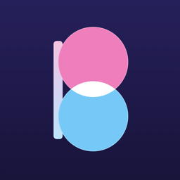

プライバシーポリシー
最終更新日：2026年11月11日
Bestie（以下「本アプリ」）は、ともだちと画面に触れ合うためのアプリです。本アプリが扱う情報と、その使い方を説明します。
これらは Google の Firebase Realtime Database に保存され、ともだちとのやり取りのためだけに使います。
本アプリは Google AdMob による広告を表示することがあります。広告の配信のために、Google が端末の識別子・広告の表示やタップの情報・おおよその位置情報などを扱うことがあります。本アプリはトラッキングの許可（App Tracking Transparency）を求めず、ほかの会社のアプリやWebサイトをまたいだ追跡には使いません。詳しくは Google の広告に関するポリシー をご覧ください。
法令に基づく場合を除き、上記の情報を第三者に販売・提供することはありません。利用しているサービス：Google Firebase（Authentication、Realtime Database）、Google AdMob、Apple（通知・iCloud）、Cloudflare（着信サーバー）。
アプリの「じぶん」タブにある「アカウントを削除」から、アカウント（匿名のユーザーID）・ともだちとのつながり・表示名・着信の宛先・通知の予約・サーバー上の自分のデータ・端末内のきろくを、いつでも削除できます。ともだちとのつながりは、1人ずつ「解除」することもできます。
本アプリは、13歳未満のお子さまから意図して情報を集めることはありません。
Last updated: November 11, 2026
Information we handle: your display name, an anonymous user ID created by Firebase Authentication (no email or phone number), your friend connections and invite codes, whether the app is open (online status), call status, and finger positions during a session. These are stored in Google Firebase Realtime Database and used only so you and your friends can connect.
Calls and notifications: to ring your friend like a phone call even when the app is closed, your iPhone's call address (a per-device token issued by Apple) is saved in your shared room, readable only by its members. When you call, our call server on Cloudflare checks that the call is really from you, then sends your friend's call address and your display name to Apple's notification service; the server does not store them. If a call can't be delivered that way, your display name, your user ID, and your friend's user ID are saved to Apple iCloud (CloudKit) to send a notification (only if you are signed in to iCloud).
On your device only: "Memories" (pictures of the lines you drew) are saved only on your device. The camera is used only to scan invite QR codes; images are never saved or sent.
Ads: the app may show ads from Google AdMob. Google may process device identifiers, ad interaction data, and approximate location to serve ads. The app does not ask for tracking permission and does not track you across other companies' apps or websites. See Google's advertising policies.
Sharing: we do not sell or share this information with third parties except as required by law. Services used: Google Firebase (Authentication, Realtime Database), Google AdMob, Apple (notifications, iCloud), and Cloudflare (call server).
Deleting your account: use "Delete Account" on the Me tab to delete your account (anonymous user ID), friend connections, display name, call address, notification subscription, your data on the server, and the memories on your device at any time.
Children: we do not knowingly collect information from children under 13.
Contact: naotakahashi.g@gmail.com